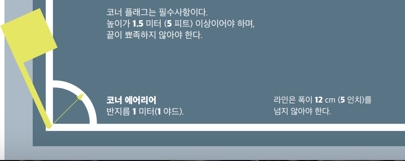

KFA Laws of the game
Philosophy and spirit of the rules of competition
Law 01
Law 02
제 1조
경기장
1. 필드표면
경기장의 표면은 전체가 천연잔디이거나, 대회규정이 허용할 경우 전체가 인조잔디이어 야 한다. 단, 대회규정에 인조와 천연의 혼합형 잔디(하이브리드 시스템)를 허용하는 경 우는 예외로 한다.
인조잔디의 색상은 반드시 녹색이어야 한다.
FIFA에 가맹한 각국 협회 대표팀 간의 경기 또는 국제 클럽 대회 경기를 인조잔디에서 개최할 때, 그 표면은 FIFA의 잔디 품질 기준을 충족해야 한다. 다만, IFAB의 특별한 지 침을 받은 경우는 예외로 한다.
2. 필드표시
경기장은 반드시 직사각형이어야 하고, 연속된 라인이 위험하지 않도록 표시해야 한다. 위험하지 않다면 천연잔디 위에 필드 표시를 하기 위해 인조잔디 표면 재료를 사용할 수 있다. 경계선은 각 지역의 넓이에 포함된다.
규칙 1조에서 명시된 라인들만이 경기장 위에 표시되어야 한다. 인조잔디를 사용할 경 우, 다른 라인들이 축구에 사용되는 라인과 다른 색상이거나 명확히 구분이 된다면 허용 된다.
두 개의 긴 경계선을 터치라인이라 한다. 두 개의 짧은 경계선은 골라인이라 한다.
경기장은 양 터치라인의 중앙 지점이 만나는 하프웨이 라인에 의해 둘로 나누어진다.
센터 마크는 하프웨이 라인의 가운데 지점에 표시한다. 센터 서클은 반지름이 9.15m(10 야드)인 원을 그려 표시 한다.

3. 크기
터치라인의 길이는 골라인의 길이보다 반드시 더 길어야 한다.
길이(터치라인): 최소 90m(100야드) / 최대 120m(130야드)
길이(골라인): 최소 45m(50야드) / 최대 90m(100야드)
대회 주최 측은 위의 범위 내에서 골라인 및 터치라인의 길이를 결정할 수 있다.
4. 국제경기를 위한 크기
길이(터치라인): 최소 100m(110야드) / 최대 110m(120야드)
길이(터치라인): 최소 64m(70야드) / 최대 75m(80야드)
대회 주최 측은 위의 범위 내에서 골라인 및 터치라인의 길이를 결정할 수 있다.
5. 골 에어리어
각 골포스트의 안쪽에서 코너 쪽으로 5.5m(6야드) 되는 곳에서 골라인과 직각이 되게 경 기장 안쪽으로 5.5m(6야드) 길이의 두 개 선을 긋고, 그 끝을 골라인과 평행이 되게 직선 으로 연결시킨다. 이 라인들과 골라인으로 둘러싸인 지역이 골 에어리어다.
6. 페널티 에어리어
각 골포스트의 안쪽에서 16.5m(18야드)되는 곳에서 골라인과 직각이 되게 안쪽으로 16.5m(18야드) 길이의 두 개 선을 긋고, 그 끝을 골라인과 평행이 되게 직선으로 연결한 다. 이 라인들과 골라인으로 둘러싸인 지역이 페널티 에어리어다.
페널티 마크는 각 페널티 에어리어 안의 양 골포스트 사이 중앙 지점에서 11m 되는 지점 에 표시한다.
페널티 아크는 각 페널티 마크의 중앙에서 반지름이 9.15m(10야드)인 원호를 페널티 에 어리어 밖에 그려서 표시한다.
7. 코너 에어리어
코너 에어리어는 각 코너 플래그 포스트에서 반지름이 1m(1야드)인 1/4원을 필드 안쪽 에 그려 표시한다.

8. 플래그 포스트
플래그 포스트는 각 코너에 반드시 설치해야 하며, 높이는 최소 1.5m(5피트) 이상으로 끝 이 날카롭지 않은 깃대와 깃발로 만든다.
하프웨이 라인의 양 끝 터치라인 밖 최소 1m(1야드) 이상 되는 지점에도 플래그 포스트 를 설치할 수 있다.
9. 기술 지역
기술 지역은 아래 설명처럼 경기장에서 경기에 관련된 팀 임원과 교체 선수 그리고 교체 된 선수들이 앉도록 지정된 구역이다:
기술 지역은 설치된 좌석 구역의 각 측면에서 1m(1야드) 연장되고, 터치라인에서 1m(1 야드) 거리까지 앞쪽으로 확장된다.
기술 지역을 명확히 구분하기 위해서 표시를 한다.
기술 지역에 있을 수 있는 사람의 숫자는 대회 규정에 명시한다.
기술지역에 있는 사람들은:
- 대회규정에 따라 경기시작 전에 신분이 확인되어야 한다.
- 책임있는 태도로 행동해야 한다.
- 부상당한 선수를 검진하기 위해 주심의 허락 하에 물리치료사/의사가 경기장에 들
어가는 것과 같은 특별한 상황을 제외하고 제한된 구역에 머물러야 한다.
한 번에 오직 한 사람만이 기술지역 내에서 전술 지시를 전달할 수 있다.
10. 골대
골대는 반드시 각 골라인의 중앙에 설치한다.
양쪽 코너 플래그 포스트에서 같은 거리에 두 개의 포스트를 수직으로 세우고, 두 개의 포스트 윗부분을 수평의 크로스바로 연결한다. 골포스트와 크로스바는 승인된 재료로 만 들어져야 하며, 위험하지 않아야 한다. 양측 골포스트와 크로스바는 반드시 같은 형태여야 하며, 정사각형, 직사각형, 원형 또는 타원형 혹은 이 모양들의 조합이어야 한다.
FIFA 혹은 대륙연맹 주관의 공식 대회에서 사용되는 골대는 축구 골대 관련 FIFA 품질 프로그램 표준에 부합하여야 한다.
양 골포스트 내측의 거리는 7.32m(8야드)이고, 지면에서 크로스바 아래쪽까지의 높이는 2.44m(8피트)이다.

골포스트와 크로스바는 반드시 흰색이어야 하고, 폭과 두께는 같아야 하며, 12cm(5인치)를 초과해서는 안 된다.
크로스바가 제 위치가 아니거나 파손되었다면, 수리하거나 제 위치에 놓일 때까지 플레 이는 중단한다. 경기는 드롭볼로 재개한다. 만일 크로스바를 수리하는 것이 불가능하다 면 경기는 포기해야 한다. 크로스바를 대체하기 위한 로프나 유연한 물건, 위험한 소재의 사용은 허락되지 않는다.
골네트를 골대와 골대 뒤쪽 지면에 설치할 수 있지만, 완전하게 받쳐지고 골키퍼를 방해 하지 않아야 한다.
안전
골대(이동식 골대 포함)는 지면에 안전하게 고정되어야 한다.